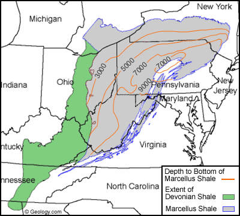

Guide To Oil And Gas Plays In North America: Introduction
Oil and gas shales in North America have been known for decades, but most investors don't know it exists or what is produced from each play. This is a shame because we could be at the beginning stages of an oil and gas renaissance in the United States, as we are beginning to meet some of our energy needs. The ability to obtain resources from unconventional targets has opened new investment opportunities. This is important as the U.S. is increasing oil production faster than anywhere in the world, and looks to have decade's worth of locations to drill. From a natural gas standpoint, the U.S. has increased supply significantly. Due to the increased supply T. Boone Pickens refers to the U.S. as the Saudi Arabia of natural gas. Natural gas prices have collapsed since the natural gas boom, and producers are currently slowing its 2012 programs. Due to the difficulty in transporting natural gas, prices are region specific, but oil and natural gas liquids (NGLs) are a different story. Liquids can be pipelined to refineries, but due to a lack of capacity in Cushing, Oklahoma Bakken Crude prices sell at a discount to West Texas Intermediate (WTI). WTI sells at a discount to Brent Crude, which is generally the term used for crude from the Middle East and the North Sea. When the pipeline to the Gulf is completed Brent/WTI differentials should tighten. Quality has nothing to do with the difference in pricing of these three types of oil. If this was the case, Bakken oil would be the most expensive as it is the lightest crude when compared to WTI and Brent. It is a supply/demand issue, based on an influx of oil from Canada and the mid-continent of the U.S. Without adequate transports for these liquids supply outstrips demand and pushes prices lower. Light Louisiana Sweet (LLS) sells for a significant premium to WTI, which has caused some oil producers to rail oil to collect better pricing.
Unconventional oil plays have come at a good time as the U.S. has seen production drop significantly since 1985 at 11.1 million barrels per day. Oil production steadily declined to 8.3 million barrels per day in 2005, but production in 2010 had increased to 9.6 million barrels per day. Oil shale is the reason for this increase. Oil-bearing shale is an oil-rich rock containing a significant amount of kerogen. All shale differs in mineral content, thickness, chemical composition, etc. This is one of the reasons every well seems to produce differently, but this can also be different based on the operator or completion methods. The largest deposits in the world are in the Green River Formation, which is located in Colorado, Utah and Wyoming. The U.S. has 62% of the world's oil shale reserves. In 2005, the world's total oil shale resource was set at the equivalent of 2.8 to 3.3 trillion barrels of shale oil. The number and size of these plays are quite large. Some plays are already producing while others are still in the exploratory phase.
In the early 1980s, no one thought these shales would be commercial. Much of the tests run on shales were vertical wells, drilled to depth and then fracked. Because the wells were vertical, only a small percentage of the shale had contact, so results were poor. Directional drilling changed this, as a vertical well will be drilled to the depth of the shale and drilled to length. These methods increased well contact from 5,000 to 10,000 feet, depending on the length of the lateral. Hydraulic fracturing or "fracking" can be very effective in horizontal wells. Up to 6 million gallons of water, sand, proppant and chemicals are injected into the well at a high pressure. This causes the shale to crack or fracture. The sand and proppant "prop" open the fractures and hold it open to keep oil moving into the lateral. Geosteering allows for steering or adjusting the angle of drilling without stopping. Significant improvements were seen in unconventional wells when this was coupled with 3D seismic. Swell Packers, sliding sleeves and other technologies have all been very important to accelerating the development of North American shale plays.
As seen below, the U.S. is littered with oil and gas shale plays.

|
| Figure 1: Shale gas plays in the lower 48 states. |
| Image: Energy Information Administration |
SEE: Oil And Gas Industry Primer
Guide To Oil And Gas Plays In North America: Shale
Antrim Shale
The Antrim shale lies within the Michigan Basin. It covers 39,000 square miles and is located in Michigan, Ohio and Indiana, and mainly produces methane and carbon dioxide. Most of the development is in the counties of Ostego and Montmorency in Michigan. The thicknesses range from 60 to 220 feet. In the 1990s, the Antrim was one of the most active shale plays in the U.S. It has produced over 9,000 wells to date. Well costs are low as the Antrim Shale is most economic between 600 and 2,200 feet. The resource is estimated to be between 31 and 76 trillion cubic feet (Tcf) of natural gas, and the total technically recoverable resource is estimated between 11 and 18.9 Tcf. To complete wells, the cost ranges from $240,000 to $280,000. Producers in this play are Breitburn Energy (Nasdaq:BBEP) and Atlas Energy (NYSE:ATLS).
New Albany Shale
This is located in the Illinois Basin. This shale produces natural gas from Indiana and western Kentucky. Natural gas reserves are estimated at 86 to 160 Tcf with technically recoverable resource of 1.3 billion of cubic feet (BCF). The Eastern Devonian shale contains a substantial oil resource and is shallow with depths averaging 600 to 5,000 feet.
Utica Shale
Located in the Appalachian Basin, this oil and gas field covers New York, Ohio, Pennsylvania and parts of Quebec in Montreal. This is not to be confused with the Marcellus Shale as it is located above the Utica. The Utica is gas dominant to the north but becomes oily to the south in Ohio. It has large variations in depth, from 2,000 feet below sea level in the north and western parts of the play to 14,000 feet towards the center in southwest Pennsylvania. This bodes well for the oil play in Ohio as well costs should be reasonable. It is estimated the Utica has a recoverable potential of 1.3 to 5.5 billion barrels of oil and 3.8 to 15.7 Tcf of natural gas. The source rock ranges in thickness of 100 to 500 feet. Producers in the Utica are Chesapeake (NYSE:CHK), EV Energy (Nasdaq:EVEP), Consol (NYSE:CNX), Hess (NYSE:HES), Exxon (NYSE:XOM), Devon (NYSE:DVN), Rex Energy (Nasdaq:REXX), Anadarko (NYSE:APC), Encana (NYSE:ECA), Forest Oil (NYSE:FST), Talisman Energy (NYSE:TLM), EQT(NYSE:EQT), Dominion Resources (NYSE:D), Range Resources (NYSE:RRC), Chevron (NYSE:CVX), PDC Energy (Nasdaq:PDCE) and Magnum Hunter (NYSE:MHR).
| Figure 2: Map showing the thickness of Utica Shale in feet. |
| Image: The Marcellus Center for Outreach and Research (MCOR) |
{kind=link}
Cumnock Shale
Located in North Carolina, this shale is prospective for natural gas. This rock is 800 feet thick and has good organic content. There has not been enough activity here to know how good this play is.
Conasauga Shale
Located in Alabama, Georgia and Tennessee, the Conasauga Shale extends as far south as Talladega County and as far north as Cherokee County Alabama. It also extends northeast into northwest Georgia. The Conasauga is one of the thickest shales in the world. Shale gas is being produced from some areas and it is much like that of the Barnett Shale.
Chattanooga Shale
Also known as the Ohio Shale, the Chattanooga Shale is generally targeted at a depth of 3,000 to 5,000 feet. It covers a large area from Kentucky to New York, and it has an estimated total resource of 12.2 Tcf of natural gas. It was initially believed that the Chattanooga was only in Tennessee and Kentucky, but was later found to be an extension of the Appalachian Basin. In Alabama, it is referred to as the Black Warrior Basin. This shale has thicknesses in excess of 1,000 feet in Kentucky, but thins to the south as much as 80 feet in some areas of Tennessee. Players in the Chattanooga Shale are Atlas Energy, GeoMet (OTC:GMET), Range Resources, Energen (NYSE:EGN) and Chesapeake.
Floyd Shale
This shale is located in the Black Warrior Basin in Mississippi and northwest Alabama. It has an average thickness of approximately 500 feet, and has been described as an equivalent to the Barnett Shale. This is still considered a natural gas prospective play.
Neal Shale
Located in the lower part of the Floyd Shale, the Neal Shale is a prospective play in Alabama and Mississippi. Given its lack of thickness, it may only be possible for horizontals to provide commercial wells in this play. It is a prospective play on natural gas.
Tuscaloosa Marine Shale
The Tuscaloosa Marine Shale is located in Louisiana and Mississippi, and there has been some significant interest in this area due to it being an oil and gas play. Although a little younger, the formation has been compared the Eagle Ford. This is still a prospective play, but if it is found to be commercial it should be a significant source of liquids. It could be costly to drill given its depth of 10,000 to 15,000 feet though. It runs from 500 to 800 feet in thickness, and has a potential reserve of 7 billion barrels of oil. Oil producers in this play are Devon, Encana and Goodrich Petroleum (NYSE:GDP).
| Figure 3: Activity in the Tuscaloosa Marine Shale. |
| Image: Goodrich Petroleum Corporation |
{kind=link}
Smackover Brown Dense Shale
Located in northern Louisiana and southern Arkansas, the Smackover Brown Dense Shale is a prospective oil play. Interest has been building in this play as it could hold as much as 1 billion barrels of oil. It has a thickness of between 300 and 500 feet, and is found at depths of 8,000 to 10,000 feet below the surface. The lower member of the Smackover Formation has as much as 50 feet of sandstone and 100 feet of dolomite. Early estimates believe this formation could stretch into Mississippi, Texas and possibly Florida. Producers in this area are Bonanza Creek Energy (NYSE:BCEI), Southwestern Energy (NYSE:SWN) and Cabot Oil & Gas (NYSE:COG).
Haynesville Shale
The Haynesville Shale is located in southwestern Arkansas, northwest Louisiana and in east Texas. It is 10,500 to 13,000 feet below the surface, covers an area of 9,000 square miles and is 200 to 300 feet thick. Estimated recoverable reserves are 60 Tcf with each well having an average production of 6.5 Bcf. It is possible the Haynesville Shale could be the largest natural gas field in the contiguous 48 states. The Haynesville was once classified as part of the Bossier shale, but now both are classified as separate formations. In March 2011, the U.S. Energy Information Administration (EIA) reported the Haynesville was the number one natural gas U.S. shale play. Producers in the Haynesville Shale are PetroHawk ((which was purchased by BHP Billiton (NYSE:BHP) and is now known as BHP Billiton), Encana, Exxon, EXCO Resources (NYSE:XCO), Forest Oil, Anadarko, Cabot Oil & Gas, SM Energy (NYSE:SM), Plains Exploration (NYSE:PXP), Comstock Resources (NYSE:CRK), Goodrich Petroleum, GMX Resources (NYSE:GMXR), PetroQuest Energy (NYSE:PQ) and Cubic Energy (AMEX:QBC).
Bossier Shale
The Bossier Shale is found 500 to 800 feet above the Haynesville Shale. Like the Haynesville, the Bossier is over pressured and organic-rich with a matrix porosity from 8 to 10%. Gas reserves seem to be close to that of the Haynesville. Producers in this play are GMX Resources, Comstock Resources, Gastar (AMEX:GST), Cabot Oil & Gas, EXCO Resources, Southwestern Energy, BHP, Encana, Exxon, Chesapeake and Forest Oil.
Fayetteville Shale
Located in Arkansas, the Fayetteville Shale is in the Arkoma Basin. The thicknesses start at
Excello Shale
Located in the Cherokee Basin is the Excello Shale. The Cherokee Basin has an estimated resource of 6 Tcf, and is located in southeast Kansas and northeast Oklahoma.
Anadarko Woodford Shale
Located in the Anadarko Basin, the Anadarko Woodford Shale runs from northwest to south central Oklahoma. The Anadarko Woodford is also known as the Cana-Woodford and is a gas play to the northwest. To the east and south, the play turns into a condensate and then an oil window. This is a liquids dominated play, and it is found at depths of 11,500 to
| Figure 4: The Anadarko Woodford Shale (Cana-Woodford) runs from northwest to south central Oklahoma. |
{kind=link}
SEE: Uncovering Oil And Gas Futures
Granite Wash
The Granite Wash is in the eastern Texas Panhandle located in the Anadarko Woodford. These wells have a high percentage of condensate and NGLs (50%), and a low cost to drill and complete. Wells have an estimated ultimate recovery (EUR) of 1.1 million barrels of oil equivalents (BOE). This reservoir is 160 miles long and 30 miles wide. It is 11,000 to 13,000 feet below the surface with a thickness ranging from 1,500 to 3,500 feet. The Granite Wash was formed by the erosion of materials from granite and formed a rock with the same major mineral constitutes. The Granite Wash is located in the counties of Beckham, Greer, Gray, Wheeler, Roberts and Hemphill. Wells costs are estimated at $9 million. Operators are Chesapeake, Newfield, Penn Virginia, Cimarex Energy, Questar (NYSE:STR), Linn Energy (Nasdaq:LINE), Forest Oil, Apache Corp. (NYSE:APA), BNK Petroleum (TSE:BKX.TO) and Devon Energy.
Hogshooter Wash
It is much like the Granite Wash but oilier. Some very good well results have come from this play. Initial production (IP) rates have exceeded 2,000 barrels of oil equivalent per day (BOE/D), with short laterals and around nine stages. Of this rate, approximately 700 barrels of oil or 57% total liquids are expected. EURs of 350 thousand barrels of oil equivalent (MBOE) are expected. Producers have been targeting this pay zone at right around
Woodford Shale
Located in southeastern Oklahoma, the Woodford Shale is also called the Arkoma Woodford because it is in the Arkoma Basin. The Woodford is mainly a gas play but increases in liquids production to the west. Shale gas resource is estimated at 22 Tcf. Its shale thickness ranges from 120 to 220 feet, and is found at depths between 6,000 and 12,000 feet below the surface. Natural gas producers in the Arkoma are Range Resources, Panhandle Oil And Gas (NYSE:PHX), Unit Corp. (NYSE:UNT), Newfield, Evolution, Marathon, Questar, SM Energy, PetroQuest, Penn Virginia, Devon, Exxon and Continental.
Horizontal Mississippian Shale
Located from western Kansas to central Oklahoma in a southeastern direction is the Horizontal Mississippian Shale. This shallow carbonate oil play is not only at a low cost but it also has EURs from 300 to 500 MBOE. It is found at depths of 4,500 to 6,000 feet, and has a thickness of 200 to 700 feet. It covers a 17 million acre prospective area. To give an idea of its significance, the Bakken is 10 million to 15 million acres in area. Percentages of oil recovery increases significantly to the east. This area has also had success in vertical programs. EURs lower to the 60 to 200 MBOE, but well costs are much lower.
| Figure 5: The Mississippian play is shown in blue and the Kansas Central Uplift is shown in red. |
{kind=link}
Ways to play the horizontal Mississippian are Sandridge (NYSE:SD), Chesapeake, Range, PetroQuest and Shell (NYSE:RDS-A, RDS-B)
Bend Shale
Located in the Palo Duro Basin in the southern part of the Texas Panhandle is the Bend Shale. The thickness ranges from 500 to 1,000 feet, and depths range between 7,000 and 10,500 feet. The Bend shale is prospective for natural gas.
Barnett Shale
The Barnett Shale is located in the Bend Arch-Fort Worth Basin in Texas. It is thought the shale may have more producible reserves than any onshore natural gas field in the lower 48 states. It has a shale gas resource of 43 Tcf. The Barnett Shale covers over 5,000 square miles and has already produced 4.8 Tcf of natural gas. It is found 6,500 to 8,500 feet below the ground. Natural gas producers in the Barnett are Carrizo Oil & Gas (Nasdaq:CRZO), Forest Oil, Williams (NYSE:WMB), Range Resources, Quicksilver (NYSE:KWK), ConocoPhillips (NYSE:COP) and Devon.
Barnett Combo Shale
This Barnett Shale is mainly a natural gas play located around Fort Worth, Texas. This gassy area is towards the southeast of the Barnett play. The northwest is liquids rich and is referred to as the Barnett Combo. Liquids production has been around 85%, and the thickness can reach 1,500 to 1,700 feet, which allows for less expensive vertical wells to be used. EOG Resources (NYSE:EOG) estimates the formation contains 70 million barrels of oil and 175 Bcf in place/square mile. Producers in the Barnett Combo include Denbury (NYSE:DNR), PDC, Range Resources, Pioneer Natural Resources (NYSE:PXD), EOG Resources, ConocoPhillips and Chesapeake.
Austin Chalk
Located in Louisiana, Mississippi and south Texas is the Austin Chalk. It is a play on both oil and natural gas and it is intermingled with the Eagle Ford shale in some areas, although there are questions as to its (Eagle Ford) commerciality. The Austin Chalk is 250 miles long by 50 miles wide and the thickness ranges from 50 to 600 feet. Target depth is 5,600 feet and is just above the Eagle Ford shale. There are three main areas of interest in the Austin Chalk: Pearsall, Giddings and Brookeland. Oil producers with interests here are Clayton Williams (Nasdaq:CWEI), Evolution, Swift Energy (NYSE:SFY), GeoResources ((which was purchased by Halcon Resources (NYSE:HK)), Anadarko and EV Energy (Nasdaq:EVEP).
Pearsall Shale
This formation is gassy and is located below the Eagle Ford in the Maverick Basin. The Pearsall shale is at a depth of 4,000 to 14,000 feet. Its most shallow areas are in the oil window and it gradually deepens into the dry gas window. It has a shale thickness of 500 to 600 feet. Chesapeake has a large leasehold in the Pearsall.
Barnett-Woodford Shale (Marfa Basin)
The Marfa Basin is the smallest of the three basins in the Permian. This area has a shale thickness ranging from 400 to 1,200 feet. It is a play on natural gas, has depth and is high in organic content and thermal maturity. Drill depths in this basin are around 17,000 feet.
Avalon Shale (Leonard)
Also known as the Leonard Shale in the Midland Basin, the Avalon generally refers to the Delaware Basin. It encompasses the counties of Chaves, Eddy and Lea in New Mexico. The Avalon is part of the first Bone Spring Formation.
Bone Spring Oil Field
This formation consists of three zones, and is located in the Delaware Basin. The first zone includes the Avalon Shale. The first through third Bone Spring pay zones have a thickness of 150 to 350 feet. The Bone Springs extends 4,390 square miles. Wells here are producing 41% oil, 31% NGLs and 28% gas. It is found at depths of 6,000 to 9,800 feet.
Wolfcamp Shale
Located in the Permian Basin, the Wolfcamp is also referred to as the Wolfberry in the Midland Basin because it is just below the Spraberry Formation. In the Delaware Basin, the Wolfcamp is located below the Bone Spring Field. The Wolfcamp yields 42% oil, 30% NGLs and 28% gas. It is estimated to cover 1 million acres and is at a depth of 7,000 to 10,500 feet. Oil producers in the Wolfcamp are Chesapeake, EOG Resources, Pioneer Natural Resources, Devon, Linn Energy, Sandridge (NYSE:SD), Cimarex, Whiting (NYSE:WLL), ConocoPhillips, BHP, Approach (Nasdaq:AREX), Apache, Forest Oil, Concho Resources (NYSE:CXO), El Paso (NYSE:EPB) and SM Energy.
Spraberry Shale
The Spraberry Shale is found in the eastern Permian Basin and is referred to as the Midland Basin. It is found below the Leonard Shale. It covers approximately 2,500 square miles. The Spraberry was ranked third in total proved reserves and seventh in total production back in 2007 by the U.S. Department of Energy. The best producing average depth is at 6,800 feet. The Dean Formation is directly below the Spraberry and is generally combined with or considered part of the Spraberry.
Pennsylvania Shale
This shale is found in the Permian Basin. It is located below the Wolfcamp in the Delaware, Midland and Central Platform Basins. It is just one of several pay zones.
Cline Shale
Located in the Midland Basin, the Cline Shale has shown promise to companies working the deeper pay zones in this area. EURs are estimated to be 340 MBOE with a well cost $4.3 million with 210,000 of these barrels being oil. Using 10 stages, laterals of 3,000 feet are expected. It has a spacing of 160 acres and 15 stage 4,000 feet lateral wells have EURs of 420 MBOE (60% is oil). Well costs are higher at $7.7 million. Ways to play this shale are Range, Chesapeake, Devon, Apache, Concho, Laredo (NYSE:LPI), Energen, Pioneer, Occidental (NYSE:OXY) and EXCO.
Monterey Shale
Located in California, the Monterey Shale is present in the Santa Maria, Ventura, Los Angeles and San Joaquin basins. This shale is a play on both natural gas and oil, but mostly oil. In the San Joaquin Basin, the Monterey is between 500 and 3,000 feet thick. In deeper areas, the Monterey Formation is 13,000 to 16,000 feet below the surface and between 8,000 and 9,600 feet in shallower areas. This shale is thought to be a part of the Kern Oil Field. Oil producers in the Monterey Shale are Venoco, Occidental, Canadian Natural Resources (NYSE:CNQ) and Plains Exploration and Production.
Lewis Shale
In the San Juan Basin, there is a gas shale play called the Lewis Shale. It covers over 1,100 square miles and is estimated to contain 96 Tcf of gas. Lewis wells are not very lucrative by themselves but when other pay zones are added results can be quite good.
Pierre Shale
Located in the Raton Basin of southeast Colorado the Pierre Shale is 700 feet thick in some spots. It is seen as far west as the Lewis shale mentioned earlier. It has produced natural gas in this area.
Piceance Basin
The Piceance Basin is in western Colorado and has generally been referred to as a gas play, but some areas are prospective for NGLs. The Williams Fork is a shale that is several thousand feet thick within the Piceance. It has five of the top 50 gas fields by proved reserves in the U.S. The Piceance also has 1.525 trillion barrels of in place of oil shale resource. It is difficult to know how much will be recoverable due to difficulties in recovery. Bill Barrett (NYSE:BBG) is active here along with Exxon, Encana, Williams, Delta Petroleum and PDC Energy.
Uinta Basin
Located in Utah, this basin is a play on both oil and gas. It recently received some press when Newfield announced it was making this one of its top plays. The Uinta is very interesting due to multiple targets with some vertical and horizontal oil pay zones. Wells have a very low cost, which creates short payback times. Bill Barrett and Newfield are active in this play.
Heath Shale
In Montana, the Heath Shale is prospective for oil. This play has been found to be spotty and inconsistent. It has a shallow depth between 4,900 and 5,200 feet and creates a low estimate well cost. Current players are Noble Energy (NYSE:NBL), Voyager Oil and Gas, Cabot, EOG Resources and Endeavour (NYSE:END).
Cody Shale
Also in Montana is the Cody Shale. This shale has received little press. Still prospective, the commerciality has not yet been proven. It is mainly a gas play and is between 900 and 2,000 feet thick and between 3,000 and 7,000 feet below the surface.
Alberta Bakken
Located in northwest Montana, the Alberta Bakken is prospective for oil from several pay zones including the Bakken and Three Forks. Estimated original oil in place/section of land ranges from 13 to 15 million barrels. This play does not have the upside of the Williston Basin Bakken but could be commercial. Rosetta (Nasdaq:ROSE), Newfield, Deethree Exploration (OTC:DTHRF), Murphy Oil (NYSE:MUR), Shell, Crescent Point (OTC:CSCTF), Vecta Energy (OTC:VCTEF), LGX (OTC:ROAOF), Mountainview Energy (OTC:MNVWF), Guardian Exploration, Nexen (NYSE:NXY), Legacy Oil and Gas (OTC:LEGPF), Quicksilver, FX Energy (Nasdaq:FXEN), American Eagle Energy (OTC:AMZG), Stone Energy (NYSE:SGY), Arkanova Energy (OTC:AKVA) and Primary Petroleum (OTC:PETEF) are all ways to play the upside.
Due to the dropping price of natural gas, many of these plays are not commercial. Some producers have let permits cancel while others have pulled rigs. Only the most economical of plays still are producing, but with gas being at $2.50 even those are losing money.
SEE: Investing In Oil And Gas UITs
Guide To Oil And Gas Plays In North America: Williston, Bakken And Three Forks
The Williston Basin is one of the most prolific leaseholds in the U.S. It extends 475 miles north to south and 300 miles east to west. Although the Bakken Formation is the best known of the Williston Basin pay zones, several others have been targeted. The Madison Group, Red River and Three Forks are all commercial. Vertical targets along the anticlines were the first to be drilled before horizontal technologies allowed for the Bakken/Three Forks recoveries. The Bakken is only 90 feet at its thickest, but the Three Forks reaches 270 feet. Harold Hamm CEO of Continental Resources has announced this play has 24 billion recoverable barrels of oil equivalent. The best way to look at the Bakken/Three Forks is by breaking it up into pieces. There are very different economics from one county to the next, and some of these economics have to do with how good the pay zone is, or even the operator. Western Mountrail County is thought of as having some of the best acreage in the Williston Basin. Alger, Ross, Sanish and Parshall fields are all in this county and have had excellent production. North to northeast McKenzie County has recently produced great results for several different oil producers. Recent results seem to point to the possibility of consistent, commercial production from the second bench of the Three Forks. It is possible the third and fourth benches could be productive in spots. South to southeast Williams County has also been prolific, and it should be remembered that the Williston Basin got its name from Williston, North Dakota as it is the center of this basin.
There are a significant number of players in the Bakken. Exxon is in the play through its purchase of Xtreme Oil & Gas (OTC:XTOG) for $41 billion in December 2009. It has 395,000 net acres in the Bakken, which is by no means a top play for the company but it has had some very good success as of late. It has acreage in the counties of Billings, Dunn, McKenzie and Williams in North Dakota. Billings is more of a play on the Three Forks, as the Bakken thins significantly. Exxon has very good acreage in northeast McKenzie, southeast Williams and northeast Dunn counties. These areas have been known to produce EURs of 900 MBOE in the middle Bakken and 700 MBOE in the upper Three Forks. It has seven operated rigs that drilled 51 wells in 2011, and 18 of these wells were completed in the fourth quarter. Its Bakken production was up 41% year over year for the fourth quarter. Xtreme completed FBIR Darcie 34X-14 in December 2011, with an IP rate of 1,338 barrels per day (B/D) and 1,338 thousand cubic feet (MCF). It used a 24/64 choke, a lateral of 9,650 feet and 24 stages.
ConocoPhillips is working the Bakken as Burlington Resources. In December of 2005, ConocoPhillips paid $35.6 billion to purchase Burlington. It has 460,000 net acres in the Williston Basin and Burlington is active in the Cedar Hills Field. This field is located in the southwestern corner of North Dakota and is prospective for the conventional Red River. Burlington is working in the south and northeast of McKenzie, and in the west and northeast of Dunn counties. In Bailey Field on Jul. 30, 2011, Burlington completed its Patton 31-1H and produced an IP rate of 2,645 barrels of oil and 1,738 MCF in the first 24 hours. It had a 28/64 choke, was completed with 21 stages and a lateral of 10,760 feet. These types of results are becoming more common place in better areas of this play. Burlington's results have improved significantly in a very short period of time. The company has long-term leases in the Bakken and has decided to slowly develop this play and not get ahead of the infrastructure. It is increasing its rig count from 10 to 15 in the Williston Basin. In the fourth quarter of 2011 it averaged Bakken production of 18,000 BOE/D.
Occidental has been increasing its Bakken leasehold since its first purchase in 2009. In 2011 it had 204,000 net acres in the Williston Basin, and estimates it will produce 30,000 BOE/D by 2017. It increased its acreage to 277,000 net acres in the fourth quarter of 2011. The core of Occidental's Bakken acreage is in northeast Dunn County, but also has a significant amount of acreage in the southwest area of the county. This is some of the best acreage in the Basin. It is also currently working in the counties of Burke and Billings. Occidental will run six rigs in the Bakken, but stated better economics in the Permian and California as why additional capital will be deployed there. The company is currently experiencing well costs of $8 million to $8.5 million in the Bakken, $6 million to $7 million in Bone Springs and $2 million to $2.5 million in the Wolfberry.
EOG Resources has a very good core leasehold in Mountrail County, including Parshall Field. It is the top Bakken/Three Forks oil producer in North Dakota, and at the end of 2011 it had gross production of 56.4 thousand barrels of oil equivalent per day (MBOE/D) gross production. The Bakken is one of EOG's top plays behind the Eagle Ford, Barnett Combo and Wolfcamp with respect to liquids production. Cost pressures have forced it to pull a rig from the Bakken, but the company could still increase the number of wells drilled and completed as it will be focusing mostly on pad drilling. It has kept costs in check much better than its competitors with an average well cost of $5.5 million. Keep in mind that this is for short (5,000 feet) laterals. The company continues to down space in the Bakken, and is currently testing a spacing of 160 acres in its core acreage and a spacing of 320 acres elsewhere. It has four rigs in its core acreage (Mountrail County) and three in other areas of the Basin. It has over 600,000 net acres in the Bakken/Three Forks, and has the capacity to ship 100,000 barrels of oil per day (BO/D) to its St. James crude unloading facility. By doing so, it is able to garner LLS pricing which is priced close to Brent. EOG has had good results in the Bakken, as its Fertile 48-0905H recorded an IP rate of 1,324 BO/D. Its results are often overlooked as it uses short laterals in the Bakken while most other operators have moved to long laterals (10,000 feet). If EOG's results are broken down, independent of lateral length, it has the best EURs in the basin. What may be the most important variable in upcoming quarters is its secondary recovery pilot. There have been questions as to the ability to do a secondary recovery in this shale, and if accomplished we could see a big jump in company oil reserves. EOG states its middle Bakken wells have had 86% oil production, and upper Three Forks 81%.
Marathon has 402,000 net acres in the Williston Basin. In 2010, it produced 17% of its total U.S. liquid hydrocarbon sales. It has seven rigs running in the Bakken. It has begun to use 30 stage fracs, which should significantly increase EURs. The company has a current spacing of 420 to 640 acres per location. I am guessing this will tighten significantly as Marathon de-risks its acreage. The 2011 exit rate was 24,000 net BOE/D, and estimates the 2016 exit rate will increase to 33,000 net BOE/D. Its core acreage is excellent and its prospects are broken down into these areas:
- Myrmidon: Southwest Mountrail and northeast McKenzie counties
- Helen: Northeast Dunn County
- Cazador: Western Mountrail County
- Aeneas: Northwest McLean County
- Hector: North central Dunn County
- Ajax: Central Dunn County
- Elk Creek: Northwest Dunn County
- Diomedes: Northwest Williams, southeast Sheridan and northeast Roosevelt counties
- Paris: Southeast McKenzie County
- Menelaus: Southwest McKenzie County
Hess has been producing in the Williston Basin since 1957 but it first discovered oil in 1951. It is currently the top natural gas producer and third largest oil producer in North Dakota at 50,000 BOE/D at its 2011 exit rate. It has an estimated 2012 average production rate of 60,000 BOE/D. By 2015 this number will climb to 120,000 BOE/D. Its 2011 capital expenditure (capex) on the Bakken was $2.1 billion compared to $.8 billion on the Utica and $.4 billion on the Eagle Ford. It has over 900,000 net acres and is running a 16 rig program, with 600,000 in its core. Hess has acreage all through the Bakken, including favorable areas of western Mountrail, northeast McKenzie and a large presence in the Nesson Anticline. Its Bakken rail transloading system became operational in February and will be very important to the price of Bakken crude. Its initial capacity was 54,000 BO/D. The company has over 100 wells with 34 plus stages, and these wells are seeing 30-day IP rates of over 1,000 BOE/D. Its average EURs throughout the Bakken are currently 550 MBOE. Well costs are around $10 million, but this number should decrease closer to $9 million as pad drilling is utilized.
WPX Energy (NYSE:WPX) has 89,420 net acres in the Bakken. It has 23 million barrels of oil equivalent (MMBOE) of proved resource and has a current production of 6.8 MBOE/D. In November 2010, Williams paid $925 million for 85,800 net acres. This acreage included 24 wells producing 3,300 BOE/D. Some thought the company paid too much, but when looking at the assets it obtained, this seems to have been a very good deal. This acreage was located in western part of Fort Berthold Indian Reservation.
| Figure 6: The Ford Berthold region of the Williston Basin. |
{kind=link}
Fort Berthold has some of the best acreage in the Williston Basin, which includes southwestern Mountrail, northeastern McKenzie and northeastern Dunn counties. At the end of 2010, production was 1,700 BOE/D, and this increased to 6,400 BOE/D in the third quarter of 2011. It currently has six rigs running and expects to have seven in 2013. WPX Energy expects three to four wells per 1,280 acre spacing. This includes the middle Bakken and upper Three Forks, so the total could mean six to eight wells. It has well costs of $9.5 million and EURs of 710 MBOE.
Continental's Harold Hamm made big news when he stated there are 24 billion technically recoverable BOE in the middle Bakken/upper Three Forks. This could be why the company has accumulated almost 1 million acres with an average EUR of 603 MBOE. It has 22 operated rigs and estimates four middle Bakken and four upper Three Forks wells per 1,280 acres. The company has been involved in two recent wells testing the second bench of the Three Forks. These two wells had IP rates of 1,396 BOE/D and 1,023 BOE/D, which is in line with the upper Three Forks producers. This second bench will be tested two to three times this year along with a test of the third and fourth bench. It will be interesting to see production numbers 90 days out. Its Eco-pad projects decreased costs by 10% from an average of $8.2 million. The most expensive wells in the Bakken have costs of $9.8 million to the low end of $6.9 million. In 2012, Continental plans to have 12 to 14 Eco-pad rigs and 20 by the year end of 2013.
Chesapeake had recently made an acquisition of acreage in and around Stark and Hettinger counties. This area has an interesting geology and is not a play on the middle Bakken. This far south we begin to see the Bakken pay zone thin (Bakken Pinch Out), but the upper Three Forks starts to thicken. It is very possible that there are further opportunities in the second, third and fourth benches as well. Although some of Stark County has been de-risked by Whiting, Chesapeake's acreage is outside of this area. Chesapeake has approximately 300,000 acres and has one rig running. It has pulled at least one rig from the area, and is refusing to honor leases it had agreed to pay between $450 and $700 per acre. Currently, the company has a rig drilling Hutzenbiler 9-137-99A 1H and is analyzing the results of other wells to deem the commercial value of its leasehold.
Linn Energy has 17,000 net acres in southwest Mountrail and northeast McKenzie counties, with a smaller position in northeastern Dunn and southeastern Williams counties. The company purchased its non-operated core position for $196 million from Concho Resources in March 2011. It has a working interest of 7% and 3,500 BOE/D of production. IP rates have averaged approximately 1,000 BOE/D with EURs of 500 MBOE.
Denbury's initial transition into the Bakken was a surprise as it has been the leading enhanced oil recovery (EOR) company in the U.S. It spent approximately $4 billion to purchase Encore's Rocky Mountain acreage which became the second Denbury core EOR leasehold. This purchase also included 275,000 net acres in the Bakken/Three Forks. It controls 200,000 net acres, with a net production of 11,743 BOE/D in the fourth quarter of 2011. The company estimates net Bakken production for 2012 to be between 12,750 BOE/D and 14,750 BOE/D. Its core acreage is concentrated in different prospects in northeast McKenzie County. Denbury also has its NE Foothills Prospect in Burke County. It is consistently seeing IP rates around 2,000 BOE with mile long laterals and 26 stages. It expects all of its acreage will provide six wells at a spacing of 1,280 acres except Burke County and Montana which should produce three middle Bakken wells.
Whiting has 681,504 net acres in the Williston Basin. Its Sanish field development has yielded EURs of 450 to 950 MBOE from the middle Bakken and 400 MBOE from the upper Three Forks. Sanish well costs have averaged $6 million, but outside the Sanish field well costs increase to $7 million and EURs drop to a range from 350 to 600 MBOE. The company has completed 16 Sanish Bakken wells with 90-day IP results, which averages to 528 BOE/D. Hidden Bench/Tarpon 90-day IP rates have averaged 930 BOE/D, which by my estimates translates to an EUR of 1,000 MBOE.
SEE: 5 Biggest Risks Faced By Oil And Gas Companies
| Figure 7: Showing the thickness of the Bakken. |
{kind=link}
In the figure above, we see why the Hidden Bench/Tarpon areas could be the best in the Williston Basin. In Tarpon, the middle Bakken is the thickest in the play while Hidden Bench has the thickest with respect to the upper Three Forks. Whiting finished drilling its first well of the second bench of the Three Forks. This well is in the Hidden Bench area, but there are two other areas it believes the second bench will be commercial.
Baytex (NYSE:BTE) has 130,000 net acres prospective in the middle Bakken, which 95% of this acreage is in North Dakota. Baytex's acreage is in Divide County. This part of the Bakken is shallower and less expensive to drill than areas to the south, but it is also not as productive. It has 10 net wells planned for 2012. The average Baytex well in Divide County has an IP rate of 435 BO/D and EURs of 440 MBOE. This company is more of a play on heavy Canadian oil, but does have a substantial acreage in northwest North Dakota.
QEP Resources (NYSE:QEP) has 90,000 net acres in the Bakken/Three Forks. Its core acreage is located in the Fort Berthold Indian Reservation and may be some of the best acreage in the play. Its 10 well pads in Heart Butte field (SESE 31-150-91) are still confidential, but will help to show what spacing may be like in this area. QEP is seeing well costs ranging from $9.4 million to $9.7 million. It has completed longer laterals reaching up to 12,500 feet. This company has EURs ranging from 300 MBOE to 900 MBOE with 50% of resource produced in the first five-and-a-half years. The low end includes thinner areas of the upper Three Forks and the high end includes its acreage in Fort Berthold.
SM Energy has 202,000 net acres in the Bakken/Three Forks. Of this it has three core prospects. The top prospect is Bear Den, which has 15,281 net acres in northeastern McKenzie County. Bear Den EURs are 554 MBOE for the middle Bakken and 447 MBOE for the upper Three Forks. The Raven Prospect consists of 36,534 net acres and is in north McKenzie County. The Raven has EURs of 498 MBOE in the middle Bakken and 409 MBOE in the upper Three Forks. The Gooseneck Prospect is 35,143 net acres and is a play only on the Three Forks. The company expects well spacing of 320 acres per well. EURs are 365 MBOE and is 100% oil. Well costs in the Gooseneck are $6.9 million while the other two prospects are $9.1 million. SM Energy's estimated savings with pad drilling is $1 million for three wells, or $333,333 per well. These three prospects are roughly 87,000 net acres. Three rigs are running with a fourth to be added in the second quarter of 2012.
Newfield is known for two things in the Bakken: it may have drilled and completed the best wells of the Williston Basin and its poor cost management, which caused it to pull three rigs from the Bakken in favor of its Uinta Play. The company deferred completions until 2012 to maintain its 2011 budget, and sold 23,000 net acres in its Catwalk Prospect for $276 million. This transaction also included 300 BOE/D of production and eight drilled and uncompleted wells. This capital will be used to work other more productive parts of the play. Newfield will spend $200 million in the Williston Basin for the 2012 calendar year. After the sale of the acreage in the Williston Basin, it had nine remaining uncompleted Bakken wells. In 2012, three of these wells were completed which had an average IP rate of 2,900 BOE/D. It will drill a total of 25 wells this year, and has a production of 7,500 BOE/D. The company has lowered its well cost from over $11 million per well to the low $10 million range. Non-operated well costs are $7 million.
Enerplus (NYSE:ERF) has 74,000 net acres in the Williston Basin, more specifically, in the Fort Berthold Reservation. The majority of this acreage is in northeastern Dunn and McKenzie counties. The company's well costs are currently $12 million. Although costs are high, it has had some very good results. It has EURs of 800 MBOE and 30-day IP rates of 1,160 BOE/D. On average, laterals are 9,500 feet and it is using between 20 and 24 stages. It will spend $300 million in the Bakken and run three to four rigs. It expects a payback of 1.6 years.
Fidelity has three rigs running and 124,000 net acres in the Bakken. Of its $400 million 2012 capex, $160 million will be spent on the Bakken. It has three core areas with the first being 16,000 net acres in Mountrail County. Fidelity's well results have improved dramatically with IP rates just shy of 2,000 BOE/D in Alger and Stanley Fields, and it has 51,000 net acres in Stark County. There have been several very good Three Forks wells west of Dickinson. Its third core area is in Richland County, Montana. The company has acquired 57,000 net acres and 27,000 of those acres were purchased in the first quarter of this year.
Oasis (NYSE:OAS) is one of the few Bakken pure plays that are left. It has 307,000 net acres in the Bakken/Three Forks, and its prospects are broken into three parts. The first is its Sanish position. This is non-operated and includes 8,409 net acres. Its East Nesson prospect is located from west Mountrail to west Burke counties and runs the length of the eastern Nesson Anticline. This prospect is 97,756 net acres. Its largest holding is in West Williston. This runs west of the city of Williston (center of the Williston Basin) and is in southwest Williams, northwest McKenzie, eastern Roosevelt and eastern Richland counties. This prospect is 201,265 net acres. There were 49.1 net wells brought to production in 2011 and 19.6 are waiting completion. It has nine rigs running in the Williston Basin, with seven in West Williston and two in East Sanish. Three additional rigs are under contract and will be delivered this year. Its East Nesson prospect has some very good acreage towards the south. In West Williston, Indian Hills is near the deepest part of the Basin. Oasis' acreage in Alger Field and Indian Hills are both some of the best acreage in this play, and its increase in stages has significantly increased production. It estimates the average daily production will increase from 15.2 MBOE/D in the fourth quarter of 2011 to 22 MBOE/D for the full year of 2012.
Kodiak (NYSE:KOG) has 157,000 net acres in the Bakken/Three Forks, and its combination of great acreage and performance has made it one of the better plays in the Bakken. In 2011, before acquisitions, Kodiak had a 2011 average production rate of 3,922 BOE/D. It estimates the 2012 exit rate will be at 27,000 BOE/D. In 2012, it plans to drill 51 net new wells. It may have the best acreage of the group as its 34,000 net acres in Dunn County, 10,000 net acres in its Koala prospect and 42,000 net acres in its Polar prospect are all what could be considered to be the best in the Bakken with EURs of 900 MBOE. Its Smokey Prospect is further to the south in McKenzie County and has EURs in the 750 MBOE range. Its recent acquisition of the Wildrose prospect of 24,000 net acres in Divide County is a good but not a great acreage. Recent difficulties in drilling seem to be linked more to its takeover of wells done by the previous producers and difficulties using sliding sleeves.
Northern Oil and Gas (AMEX:NOG) is another Bakken pure play, but it uses a non-operated model. I have had difficulties buying into this, but costs are lower and the company seems to be on the comeback from a series of stories attacking the stock. It has 160,000 net acres in the Williston Basin, and the acreage is spread throughout the play, spreading out risk.
| Figure 8: Holdings for Northern Oil & Gas in the Bakken. |
| Image Source: Northern Oil & Gas Inc. |
{kind=link}
It has extensive acreage in Mountrail, eastern Williams and northern McKenzie counties. All of this acreage is very good and should have good production. In the third quarter of 2011, Northern averaged production of 5,700 BOE/D. Guidance for 2012 is for 44 net wells spud, with an average cost of $7.4 million. Keep in mind that the average operator has costs of $10 million. In 2011, it added 38,000 net acres for $2,000 per acre and plans to spend $20 million per quarter on additional acreage.
Magnum Hunter has 69,299 net acres in the Williston Basin. There are 36,355 net acres located in North Dakota. Much of this acreage is in Divide and western Burke counties. Although, a small portion of the acreage is in Renville and Bottineau counties, which I am unsure is commercial. Divide County has proved to be a decent producer considering well costs have been about 30% less than in other productive North Dakota counties. Although prospective for both the middle Bakken and Three Forks/Sanish, the latter has performed better. Thomte 8-5-163-99 had an IP rate of 1,309 BOE/D using a 30-stage frac. Its wells in Saskatchewan have had lower IP rates, but these are one-mile laterals as opposed to the two-mile laterals used in Divide County.
Unit Corp has 13,400 net acres in the Bakken. Its acreage is in south central Williams, northeast McKenzie and Sheridan counties. The 30-day IP rates have averaged 1,098 BOE/D. It is experiencing average well costs of $11 million with a lateral of 9,000 feet and with 28 stages.
GeoResources, which was purchased by Halcon, has 55,000 net acres in the Bakken. It increased to three rigs and has combined with Halcon to have 33 operating wells with respect to its net operated Bakken acreage. The Bakken production as of the fourth quarter of 2011 was 1,998 BOE/D, with 93% being oil. This was a growth of 26% quarter over quarter. The company operates in the Bakken as G3 Operating LLC, in a partnership with Resolute (NYSE:REN). G3 Operating is currently working in west Williams County, east Roosevelt and Richland counties. This acreage has EURs of 350 to 500 MBOE, and well costs of between $7.5 million and $8.5 million.
Resolute has 33,000 net acres in the Bakken. Its Paris prospect is located in southeast McKenzie County. It is 8,400 net acres and is operated by Resolute. Its Shep prospect is non-operated in western McKenzie County. Five wells will be completed this year in New Hope using drill pads, decreasing well times by a week.
Triangle Petroleum (AMEX:TPLM) has 83,500 net Bakken acres. Of this, it has 29,000 net acres in North Dakota and 54,500 net acres in Montana, and 52% of its acreage is operated. The majority of its non-operated acreage is in the counties of McKenzie and Williams. Triangle is the operator for its Station prospect in Montana, but has been looking for an industry partner for this acreage. It currently has 17 wells permitted in North Dakota, along with two offline wells today and five that were fracked in October. Three of its sites are permitted to be drilled on four well pads. The company also created its own pressure pumping business that commenced operations in July 2012.
Abraxas (Nasdaq:AXAS) has 20,835 net acres in the Bakken. Its acreage is spread out over seven prospects, and its Harding/Rough Rider prospect is the largest at 7,010 net acres. It is a non-operated area though. Its North Fork/Nesson prospect is 3,540 net acres, and this is operated and has well results. This part of the play has the most upside. The Carter prospect is composed of 3,200 net acres, its Sheridan prospect is 2,340 net acres and its Elkhorn Ranch/Lewis & Clark is 2,035 net acres. Its smallest acreage is in the Elm Coulee with 440 net acres. On average, Abraxas estimates its acreage will be four middle Bakken and four upper Three Forks wells. In 2012, it plans to drill five net operated wells and one net non-operated well. It estimates average well costs will be $9 million, or $7.5 million per pad drilling. EURs for its acreage average to 500 MBOE.
Renegade Petroleum (OTC:RPTTF) has 23,673 net acres in the North Dakota Bakken. This company has assets in the U.S. and Canada with the majority a play on light sweet crude. Its Canadian acreage is quite good, but we are unsure if its American acreage in Renville County, North Dakota is commercial.
Sundance Energy (OTC:SDCJF) has 8,667 net acres in the Bakken/Three Forks. It is currently participating in three North Dakota prospects. Helis operates Sundance's S. Antelope prospect with two rigs, and expects to drill 18 gross wells this year. Hess is the operator in the Goliath prospect. It has three rigs running and expects to drill 30 gross wells this year. EOG Resources operates its Phoenix prospect. By August 2012, 13 gross wells were completed and two Sundance owned Chase wells in the second half of the year. Sundance has some good acreage and should have good non-operated results going forward.
Samson Oil & Gas (AMEX:SSN) has acreage in the Bakken in Montana and North Dakota. Its North Dakota acreage in North Stockyard Field is a very small position (1,200 net acres) and was used as a starting point to get into the Williston Basin. It has 35,000 net acres in its Roosevelt project. In North Stockyard, it plans to have four infill wells in 2012 and two infill wells in 2013. It has had very good success here as it has had IP rates in excess of 2,000 BOE/D. Samson's Roosevelt project is on the edge of the Weldon-Brockton Fault Zone. It is too early to tell on how successful this area will be, but other good producers are working the area and are getting good results.
Voyager Oil and Gas, which acquired Emerald Oil and Gas in July 2012, and operates under the Emerald Oil, Inc. (AMEX:EOX) has a non-operator model. It has 32,000 net acres in the Bakken/Three Forks. It has partnered with several of the bigger Bakken players like Oasis, EOG Resources and Brigham. Emerald's average EUR for the Bakken/Three Forks is 450 MBOE, with well costs around $9 million. It purchased 1,400 net acres in the fourth quarter of 2011 at an average cost of $2,100 per acre. Emerald's acreage is spread out through the play with significant holdings in the counties of Williams, McKenzie and Richland. It uses the same non-operator model as Northern Oil and Gas.
American Standard Energy Corp. (OTC:ASEN) has 32,300 net acres in the Bakken. It is a non-operator and has small interests in a large number of wells, drilled by some of the bigger operators in this basin. Working interests range from 6.25% to minuscule.
Credo Petroleum has 6,000 net acres in the Fort Berthold Reservation of North Dakota. It is to the south and west of Parshall Field. Its Bakken acreage is quite small, but it's important to a company that has a market cap of $107 million. This company garners most of its production from the Central Kansas Uplift.
Arsenal Energy (OTC:AEYIF) has production of 1,200 BOE/D in North Dakota. The company has 4,123 net acres in the Stanley area, which is very good acreage, and has 676 net acres in the Lindahl area of northeast Williams County. It has 2,411 net acres in Rennie Lake/Black Slough in Burke County. Arsenal is an operator and has had some very good completions in North Dakota with IP rates at 1,850 BO/D in its Stanley prospect.
GMX Resources has 35,375 net acres in the Williston Basin. Of that 7,117 net acres are located in McKenzie County, and 9,441 net acres are in Stark County. It has EURs of 500 MBOE, and believes well costs will be from $9 million to $10 million using laterals of 9,500 feet. The company's acreage is located in southeast McKenzie, north Billings and Stark counties. Some of this acreage has been de-risked by Continental and Whiting, but a portion is still outside of what I would say is commercial. Its McKenzie acreage is average at best, but should be prospective for both the middle Bakken and upper Three Forks. Its Billings County acreage has had some very nice upper Three Forks wells in spots, but has not been as consistent as I would like to see. The upside for GMX rests on the possible upside to additional lower Three Forks benches. Another worry is the acreage in central to eastern Stark County. This acreage was poor enough to cause Chesapeake to pull rigs and not honor leases. GMX has benefited from very good non-operated well results by Whiting and Slawson but has had difficulties to date as an operator.
US Energy Corp. (Nasdaq:USEG) is currently working with Brigham (STO) and Zavanna in North Dakota. It has 2,825 net acres with these two operators. It recently (December 2011) sold 75% of its undeveloped working interest to Brigham for $13.7 million. USEG insists it maintained its best and highest interest wells. It also sold interests in its Zavanna program to Halcon and Yuma. In January 2012, it sold 75% of its interests for $16.7 million. It retained 35% of Zavanna's working interest in 1,650 net acres. These sales were made to raise cash while maintaining a steady flow of income from its best wells. USEG also has 19,000 net undeveloped acres in Montana.
Earthstone (AMEX:ESTE) is an oil company that used to purchase underperforming wells and refurbish them for the purpose of increasing oil and gas production. This has changed as it has become a Bakken non-operator participating in wells with Marathon, Brigham and Continental. It recently sold some non-core assets for the purpose of expanding its non-operated program and funding its operated program in Montana.
Emerald Oil, which was acquired in July 2012 by Voyager and operates under the Emerald Oil, Inc.,is a newcomer to the Williston Basin. It purchased over 9,000 net acres for $143.1 million in Dunn County. It estimates well costs will be $8 million and it will drill four middle Bakken and three upper Three Forks wells per pad.
Mountainview Energy has 22,000 net acres in the Williston Basin. Its Stateline and Medicine Lake prospects cover the counties of Divide, Sheridan and Roosevelt. Although this is not the best area, it is has several bigger names in the area with producing wells. It also has non-operated acreage in the Williston Basin that ranges from 12.5% in the Olson well to 1% in the Miller and Strahan wells. Mountainview estimates its wells will have an IP rate of 600 BO/D, based on a 30-stage frac and well costs of $6.624 million.
American Eagle has 10,000 net acres in the North Dakota Bakken. Its Spyglass prospect is in Divide County, and it is currently drilling three wells in Colgan Field which are expected to be completed by the end of 2012. Its West Spyglass prospect is also in Divide County and is 4,000 net acres. American Eagle's Benrude prospect is located in Roosevelt County. It recently merged with Eternal Energy which added to American Eagle's core acreage.
{kind=link}
In the illustration above (from GMXR's fourth quarter of 2011 conference call), is also useful in showing the depth of the Basin. The light blue and white areas show the deepest and most productive plays. As a general rule, the deeper the Basin the thicker the shale, and this backs the assertion that in the counties of western Mountrail, southeast Williams, northeast McKenzie and northeast Dunn are the best from a geological standpoint. This sweet spot borders a shallow area which is the Nesson Anticline, which was a vertical target in the past. Shale thickness is also important.
| Figure 10: Map showing the thickness of middle Bakken. |
{kind=link}
These maps give an idea as to how good each county is with respect to possible oil recovery. It also helps to substantiate EURs by county. Because oil producers vary in completion methods and ability these estimates are difficult to generate, but for the purpose of this we will use a level playing field or one producer to drill in each area. Kodiak has provided estimates throughout its acreage and because of this I will use this company as a baseline.
| Figure 11: Map showing the counties of Polar, Koala and Dunn. |
{kind=link}
In defining what the best acreage is, one must look closely at the play and see what defined borders can be used to properly group acreage. Acreage in the counties of Polar, Koala and Dunn County are all considered to be the best in the play. Also, west and southwest Mountrail County can be included in this area. My EURs in this area are 800 to 900 MBOE including acreage in northeast McKenzie from Koala to the Dunn County prospect. This is backed by very good results by Newfield in its Westberg prospect.
| Figure 12: Map showing Newfield\'s Westberg prospect. |
{kind=link}
The most northern aspect of this sweet spot is from Polar and east into Mountrail County terminating at the most northern portion of Alger and around Sanish fields. Kodiak's Smokey prospect has EURs in the 750 to 850 MBOE. This area seems to cover a very good portion of central McKenzie County such as Newfield's Aquarium/Watford, and Whiting's Hidden Bench. Brigham's Roughrider, EOG's Stateline and Oasis' Red Bank prospects also fall in this grouping located in western and southwestern Williams County.
North Williams and Divide counties are not as good as the areas previously listed. Well costs are lower here as the middle Bakken is not as deep, but the shale itself is very thick. I would expect EURs of 500 MBOE, which are substantiated by Continental's results. Southwest Dunn County should produce roughly the same type of numbers. Kodiak's Grizzly prospect will be in the 300 to 400 MBOE range and roughly the same EUR as its Sheridan County acreage. These estimates are just the middle Bakken and do not reflect numbers associated with the upper Three Forks. Very good results have come from Kodiak's Koala prospect, with EURs in the 700 to 800 MBOE range. Whiting's Lewis & Clark prospect, in northern Billings and western Stark counties, is only productive from the Three Forks. Given that the Three Forks reaches a thickness of 270 feet in some spots, it could provide additional resource and locations. Below the upper Three Forks are three additional benches, which will add locations and decrease well spacing. This has not been properly tested, but initial results have been good. EOG will be conducting secondary recovery in its Parshall Field, which could help to provide an idea of whether the middle Bakken can be produced by this method.
Guide To Oil And Gas Plays In North America: Eagle Ford
The Eagle Ford may be the greatest oil discovery in the U.S., and maybe the world. Its geology consists of three windows.
| Figure 13: The three windows comprising the Eagle Ford. |
| Image: EOG Resources |
{kind=link}
In the illustration above, the green area is referred to as the oil window, which has resource that is predominantly oil. The pink area is referred to as the wet gas window. This window produces a high percentage of NGLs/condensate. In orange is the gas window and it's predominantly gas, which is not considered economical at this time.
Royal Dutch Shell has 250,000 net acres in this play. Its 106,000 net acres on Harrison Ranch in Dimmit County is the single largest leasehold in the Eagle Ford. This acreage is located in the oil window. It started accumulating acres in 2008.
BHP Billiton purchased PetroHawk for $12.1 billion to get into the Eagle Ford. In return, it acquired 1 million acres of shale and production of 158,000 BOE/D. BHP has 332,000 net acres in the Eagle Ford. Half of this acreage is in the liquids portion of the play. Its Black Hawk portion of this play is in the counties of Karnes, DeWitt and Gonzales. This is located in the Eagle Ford sweet spot.
BP (NYSE:BP) has 450,000 net acres in the Eagle Ford. Its acreage is in the counties of Dimmit, Webb, La Salle and Duval. The Webb County acreage is mostly prospective for gas and is not currently being worked, but its liquids-rich acreage to the north is being drilled.
ConocoPhillips has 220,000 net acres in the Eagle Ford. Its acreage is located in the counties of Karnes, DeWitt, Lavaca, Colorado, Austin, Bee, Fayette and Live Oak. Production in the Eagle Ford exceeded 50,000 BOE/D in December 2011. Conoco estimates production will increase to 100,000 BOE/D by the end of 2012.
Statoil (NYSE:STO) formed a joint venture (JV) with Talisman Energy (NYSE:TLM) to purchase 97,000 net acres in the Eagle Ford back in October 2010. This purchase was for $1.325 billion or $13,600 per acre. Statoil also paid $180 million or $10,000 per acre for a 50% interest in 37,000 net acres held by Talisman. This JV totaled 134,000 net acres. This was not a bad deal for Statoil given that the acreage covers DeWitt, Karnes, La Salle, Live Oak and McMullen counties. Statoil and Talisman purchased an additional 15,400 net acres in the counties of La Salle and Dimmit. The purchase price was $225 million or $14,600 per acre.
Anadarko has more than 400,000 gross acres or 200,000 net acres in the Eagle Ford. This Maverick Basin acreage is in the counties of Maverick, Dimmit, La Salle and Webb. Anadarko has stated EURs to average 450 MBOE. Its JV with Korea National Oil Corp. will provide $1.6 billion in capital over the next three years to develop the play.
Apache has over 450,000 acres prospective for the Eagle Ford, and 400,000 of those acres are through a JV with EV Energy. Its acreage is mostly in gas dominated areas, and in the counties of Austin, Brazos, Burleson, Fayette, Grimes, Lee and Washington.
EOG Resources may be the best positioned Eagle Ford player, but it took a huge chance in acquiring acreage before anyone knew for certain whether liquids extraction was economic or not. Not only is a large portion of its 647,000 net acres in liquids-rich windows, it has also produced many of the highest IP rates to date. Its average production is 78% oil and 10% NGLs. Only 49,000 net acres are in the gas window. EOG is present in the counties of Atascosa, Bee, DeWitt, Duval, Gonzales, Karnes, LaSalle, McMullen, Webb and Wilson. More recent wells have an IP rate exceeding 3,000 BO/D plus NGLs and gas. There are 65 to 90 acres in down spacing progress, and well costs are $5.5 million with a lateral of 4,000 feet.
Chesapeake has over 600,000 net acres in the Eagle Ford. It brought CNOOC (NYSE:CEO) into this play at a 33% working interest with the option to buy into additional acres, for $2.16 billion or $10,800 per acre. Chesapeake began accumulating acreage in August 2009. It acquired most of its acreage in the oil window, but more to the south and not in what has been the sweet spot of the play (Gonzales County).
Hess has 86,000 net acres in the Eagle Ford and 51,000 gross acres in the counties of LaSalle, Frio and Dimmit. The company has 25,000 gross acres in Lavaca and Colorado counties, 39,000 gross acres in DeWitt and Lavaca counties and 12,000 gross acres in Fayette, Gonzales and Lavaca counties. This acreage is a JV with ZaZa Energy Corp (Nasdaq:ZAZA) for which ZaZa operates and has a 10% working interest.
Pioneer Natural Resources drilled 111 wells in 2011 at a cost of between $7 million and $8 million. Pioneer will drill 125 wells in 2012 running 12 rigs. In the third quarter of 2012, it drilled 35 wells. It has a JV with Reliance Industries. Pioneer sold 45% of its 212,000 acres in exchange for $1.15 billion.
Cabot Oil and Gas has 61,000 net acres in the Eagle Ford but one-third of it is operated by EOG Resources. Cabot is running one rig in 2012. It has 38,000 net acres in the Buckhorn (Frio, Atascosa and La Salle counties). IP rates have averaged around 697 BOE/D and EURs average 400 MBOE. EUR ranges are 380 to 550 MBOE. Laterals have averaged from 3,200 to 6,500 feet in the Buckhorn. Its Presidio (18,000 gross acres in Atascosa, Wilson and Karnes counties) acreage has had an IP rate average of 774 BOE/D, and an EUR range of 300 to 500 MBOE. Lateral lengths have averaged from 5,100 to 5,800 feet.
Plains Exploration and Production has 60,000 net acres in the Eagle Ford, and has seven to nine rigs running in 2012. The company has a centralized position located in the counties of Wilson and Karnes.
Newfield acquired 300,000 net acres in the Maverick Basin with its purchase of TXCO Resources. This acquisition was jointly made in January 2010 with Anadarko Petroleum. Its acreage is located in the counties of Dimmit, Maverick and Zavala. It now has 335,000 net acres. EURs of 300 MBOE are expected with average well costs of $6.6 million.
SM Energy has 149,000 net operated and 46,000 net non-operated acres in the Eagle Ford. Its operated Webb acreage suggests well spacing is between 72 and 143 acres. Its non-operated acreage will be carried for three to four years. Its most northern acreage in Webb County is its best with 58% liquids, which is 48,287 net acres or approximately one-third of its operated play. Well costs run between $6.8 million and $7.7 million with the lowest at the north. Its non-operated acreage is in the counties of Dimmit, Maverick and Webb.
Rosetta Resources has 65,000 net acres in the Eagle Ford and 50,000 are in liquids-rich windows. Its acreage is located in the counties of Dimmit, Duval, Gonzales, La Salle and Webb. The IP rates for Dimmit County have been 1,990 BOE/E (850 BO/D) and the rates in Gonzales County are 3,033 BOE/D (2,450 BO/D). Well spacing has been tested down from 65 acres and 93% of capex in 2012 will be spent on the Eagle Ford.
Forest Oil has 105,000 net acres prospective in the Eagle Ford. Its acreage is located in the counties of DeWitt, Gonzales, Lee and Wilson. The company has two rigs running and its best well to date was in Gonzales County. The Gonzales IP rate was 1,945 BO/D and 1931 MCF/D. Forest has great Eagle Ford Acreage.
Swift Energy has acreage in the counties of Webb, La Salle and McMullen. It has 78,000 net acres and is currently using laterals of 6,000 feet and spacing of 80 acres. There's an estimated resource potential of 950 MBOE. There are four to five rigs running in the Eagle Ford, including 12 operated wells in the third quarter of 2012.
PetroQuest has 2,300 net acres in La Salle and Dimmit counties. It plans two or three wells in 2012. Wells have a high percentage of oil, but IP rates have not been as good in the 263 to 725 BOE/D.
Carrizo has 41,000 net acres in the Eagle Ford with four rigs currently drilling. It has a JV with GAIL (India) for 20% of 20,200 net acres plus eight producing wells for $63.7 million and a $31.4 million carry. Well spacing is currently at 115 acres and EURs of 400 MBOE, and there are laterals of 5,000 feet with 18 stages that have well costs of $7 million to $8 million.
Clayton Williams has 177,000 net acres in Giddings prospective for the Austin Chalk and Eagle Ford. The Eagle Ford is not as good in this area, but is a secondary target. In Wilson County, well costs are $7.5 million and gross reserves are 300 to 400 MBOE.
Magnum Hunter has 24,000 net acres in the Eagle Ford. Its acreage is located in the counties of Fayette, Gonzales and Lavaca. In Gonzales, there are 18,712 acres, 2,065 net acres in Fayette and Lee and 3,223 net acres in Atascosa counties. Its wells in Gonzales and Lavaca counties have been great, as it is in the Eagle Ford sweet spot. IP rates have varied from 605 BOE/D (nine to 11 stages) to 2,044 BOE/D (21 to 22 stages), and lateral lengths are from 4,365 to 6,708 feet.
GeoResources has 24,000 net acres in the Eagle Ford. This is mostly in Fayette, but has a much smaller area in Gonzales. Ten wells have been drilled, and in 2012 20 to 24 wells will be spud. GeoResources has had 30-day IP rates of 369 to 636 BOE/D. It is important to remember that this acreage is just to the northeast of Magnum Hunter and EOG Resources. EURs are expected to run between 325 and 500 MBOE at a spacing of 150 acres. It has an additional 30,000 net acres in Giddings which was just purchased along with 170,000 acres in the Brookeland area. Its acreage in Giddings is located in Fayette, Washington and Grimes counties. A recent well result had a 30-day IP result of 326 BO/D.
Comstock Resources has 28,000 net acres in the Eagle Ford, and it has acreage in the counties of Atascosa, Karnes, La Salle and McMullen. Comstock expects EURs of 400 MBOE and well spacing of 100 acres. In 2011, Comstock drilled 19.2 net wells with an average IP rate of 820 BOE/D.
Sanchez Energy (NYSE:SN) has 91,000 net acres in the Eagle Ford. It is prospective of Gonzales, Fayette, Lavaca, Zavala, Frio and Atascosa counties. The company plans to spend $126 million to $144 million on its 2012 drilling program. It expects to drill 16.5 net Eagle Ford wells with seven already, and the remainder to be completed in the fourth quarter of 2012. The spacing is expected to be 120 acres, but there could be further down spacing. Its Gonzales County acreage is by far its best. EUR expectations are 600 MBOE and well costs will average $8.5 million. Its Fayette/Lavaca acreage has EURs of 450 MBOE and well costs of $7.5 million. This company's Zavala and Frio acreage has EURs of 350 MBOE and well costs of $6 million.
Goodrich Petroleum has over 40,000 net acres in the Eagle Ford and has acreage in La Salle and Frio counties. It has had some good completions, with IP rates averaging 907 BOE/D. It has been changing lateral lengths to test the play and is using 21 to 29 stages.
Matador Resources (NYSE:MTDR) has 28,906 net acres in the Eagle Ford, and 84% of the 2012 capex will be spent here. Matador will drill 27.6 net wells in the Eagle Ford and Austin Chalk this year. There is 85% of its Eagle Ford acreage in the liquids windows. In the counties of Gonzales, Wilson, Karnes and Atascosa there are 4,874 net acres. This acreage is Matador's best in the Eagle Ford.
ZaZa Energy has 123,000 gross acres in the Eagle Ford, but only 12,300 net acres. ZaZa is the operator of this acreage which is a JV with Hess. It also has 63,000 net Eaglebine acres.
Abraxas has 12,177 gross acres as part of the Blue Eagle JV. This acreage is in the counties of Atascosa, DeWitt, Lavaca and McMullen. Abraxas has a 41% working interest. It recently announced it has an agreement in place to sell a 25% working interest in the Eagle Ford to provide capital for the purpose of developing its other plays.
Evolution Petroleum has 18,000 net acres in the Giddings Field. Targeted reservoirs are between 9,000 and 13,000 feet and are generally completed with laterals of 4,000 feet. Re-entries cost $1 million to $1.7 million and new horizontals are running $2 million to $3 million. The Giddings field is prospective in the Eagle Ford, but the primary pay zone is the Austin Chalk.
Penn Virginia has 23,000 net acres in the Eagle Ford. Of the $300 million to $325 million in the 2012 capex, 85% will be spent on the Eagle Ford. It is in the Eagle Ford sweet spot, with acreage in Gonzales and Lavaca counties. It has 30-day IP rates of between 675 and 1,025 BOE/D. The company expects EURs in the 400 MBOE range, and well costs are approximately $8 million. It is currently doing laterals of 4,000 feet with 15 to 16 stages. There have been very good results by EOG Resources and Magnum Hunter in this area.
Gastar has 19,574 net acres in Leon and Robertson counties of the Eagle Ford. Test wells have not been as good as hoped, but further de-risking by Devon and EOG Resources should give an idea of how this area will produce.
Crimson Exploration (Nasdaq:CXPO) has 8,160 net acres in the Eagle Ford and 17,000 net acres in the horizontal Woodbine. The company has currently down spaced its Eagle Ford acreage to 160 acres but believes it could get to 80 acres. Of the 2012 capex, 38% will be spent on the Eagle Ford. It has 6,550 net acres in Zavala and Dimmit counties, with 1,050 net acres located in Karnes County and 560 net acres in Bee County.
Texon Petroleum has 5,900 net Eagle Ford acres, and 75% of its reserves are from here. An estimated 86% of production will be from liquids. It has three other oily pay zones.
US Energy Corp. has a 30% working interest in Crimson Exploration's Eagle Ford acreage. This is 4,136 net acres in Zavala and Dimmit counties.
Enerjex Resources (OTC:ENRJ) has 5,500 acres in Atascosa and Frio counties. It has seven wells producing at a depth of 4,500 feet.
Global Petroleum (OTC:GBPOF) has 1,651 acres in the Eagle Ford as part of a participation agreement with Texon Petroleum.
Lucas Energy (NYSEAMEX:LEI) has 9,700 net Eagle Ford/Eaglebine acres. Of those, 5,144 net acres are in the Eagle Ford's Atascosa, Gonzales, Karnes and Wilson counties. The company is looking to divest its Eagle Ford assets and focus on the Austin Chalk.
Eagle Ford Oil and Gas (OTC:ECCE) has a 38.75% working interest in 2,315 acres in Lee County. It also has a 1% interest in 2,400 acres in Live Oak County. It has had very limited success.
Jadela Oil Corp. (CVE:C.JOC) has 7,989 net acres in Maverick County just west of Newfield's Comanche Ranch. It has the right to acquire an additional 2,325 net acres.
The Eagle Ford is a very complex and lucrative play on liquids. It is very different from the Williston Basin, as production can change significantly in a very short distance. Given how early we are in its development, it is difficult to know where the sweet spots are. What we do know is the oil window is comparatively shallow. This decreases well costs by $500,000 when compared to the condensate window. This oil window is not as productive as the condensate window, but costs help to level this out some.
| Figure 14: Map showing different windows in the Eagle Ford in Texas. |
| Image: Energy Information Administration |
{kind=link}
The picture above shows the shallowest portion (less than 4,000 feet) of the Eagle Ford being in the oil window of Maverick and Zavala counties. This area is by far the lease expensive to drill and complete. As we move to the northeast, the oil window starts at about 6,000 feet, with the best production in the oil window coming from Gonzales County. Look at the area in the southeastern portion of this county where a cluster of wells have been drilled (EOG Resources, Penn Virginia and Magnum Hunter are active here). The San Marcos arch runs through Gonzales County, and should provide good results around the structure. These good results in the oil window are also evident in Wilson County. Moving to the condensate window, it is much shallower in Dimmit and Webb counties. This area can be as shallow as much as 6,000 feet but then deepens to 12,000 feet to the south. As with the oil window, the condensate window seems to have the best results near Gonzales County. Lavaca, DeWitt and Karnes counties all have very good results as well. Shale thickness is also an issue as it is consistently 200 feet where the condensate and oil windows meet. This is another reason for the very good results. The dry gas window is the deepest and most costly area to drill. Given the price of gas, it is not economical to drill. Webb (dry gas) and Dimmit (condensate) counties have shale thickness up to 300 feet in areas.
Guide To Oil And Gas Plays In North America: Niobrara
The Niobrara of the Denver-Julesburg Basin (DJ Basin) began receiving recognition on the announcement that Samson was selling a large portion of its acreage to Chesapeake. The Niobrara formation can be very different from one location to another. It has been targeted in Colorado, Wyoming and Nebraska, and there are multiple pay zones, both vertical and horizontal. The bullish sentiment surrounding the DJ Basin has to do with these multiple pay zones and its location on a resistive anomaly. ConocoPhillips purchased 46,000 net acres in the Niobrara from Lario Oil & Gas in July 2011.
Anadarko has 350,000 net acres in its core Wattenburg Field acreage. These wells are 60% oil and 70% total liquids. EURs are 300 to 600 MBOE and Anadarko has 170 horizontal wells planned in 2012.
EOG Resources has 300,000 net acres in Colorado just south of Silo field. It has three rigs operating and 10 completed wells. It has 59 permitted wells and four wells in 2010 with IP rates of between 700 and 1,100 BO/D. In 2011, two of its wells were restricted to 700 and 800 BO/D. EOG is a very good operator in this area.
Devon Energy has 300,000 net acres in the Niobrara, but sold one-third of it to Sinopec (along with acreage in four other prospective plays) for $2.2 billion. Part of Devon's acreage is in Goshen County to the west of Chesapeake's acreage.
Marathon has 144,000 net acres in the DJ Basin. It has two rigs running and has planned 17 to 24 net wells in 2012. Of its six producing wells, IP rates have been as high as 500 BO/D. Marathon has acreage in Goshen, Laramie and Weld Counties of Wyoming and Colorado.
Noble has 880,000 net acres in the DJ Basin. Its acreage is in and around both the Silo and Wattenberg fields. Its Wattenberg holdings total 410,000 net acres. Well results have been very good in Wattenberg, with its high GOR area producing 30-day IP rates of 750 BOE/D with 40% being liquids. The further extended from the core, we see 30-day IP rates drop to 480 BOE/D with 75% liquids. The average well has an EUR of 310 MBOE. Noble is currently down spacing this area between an 80 and 40 acre spacing. The company believes it can use long laterals (9,000 feet), pad drilling and 39 stage to improve EURs to 750 MBOE at a cost of $7 million to $8 million per well. To the northwest of Wattenberg Field, Noble has increased its acreage to 230,000 net acres. These wells are performing as well as the Wattenberg extension area producing 30-day IP rates of 550 BOE/D with liquids content of 85%.
Continental has 90,293 net acres in the DJ Basin. The bulk of its acreage is to the northeast of Wattenberg Field. Its most recent well had an IP rate of 739 BOE/D.
Chesapeake has approximately 24,000 net acres purchased from Samson in Goshen County. The company has drilled nine wells and has four completed wells here.
Encana has 48,000 net acres in the DJ Basin. The Niobrara is at an estimated depth of 7,000 to 8,000 feet. The company has completed five horizontal wells in 2011, and with plans to drill 18 wells in 2012. Currently, there are two wells on production with another nine being completed or waiting on completions in this area. IP rates have run from 260 BO/D to 540 BO/D. NGLs have added an additional 100 to 200 barrels per day.
Whiting has 73,611 net acres in the DJ Basin. This acreage is to the northeast of Wattenberg Field and to the southeast of the Silo Field. It estimates well costs to be $4 million to $5.5 million. It will drill eight wells here in 2012.
QEP Resources has 84,000 net acres just south of Silo Field.
SM Energy has 25,000 net acres in north Silo Field. It did complete one well in the area that had an IP rate of 800 BO/D.
Fidelity Oil & Gas has 65,000 net acres in the Niobrara. It currently has one rig running in this play. Of its $400 million budget, Fidelity will spend $25 million on developing this acreage. It expects EURs of 200 to 300 MBO. It had a disappointing first well, but is currently testing a second.
Bill Barrett Corp has 75,600 net acres in the DJ Basin. It plans to drill 36 gross horizontal Niobrara wells this year.
has 58,773 net acres in the Niobrara. It will spend $43 million on developing this area in 2012. expects EURs of 250 MBOE, and has a well spacing of 160 acres with no interference. Its first five wells have tested at 650 to 725 BO/D. Wells are producing 80% liquids at a cost of $3.6 million. Well designs have had laterals of 5,000 feet with 15 frac stages. Jake #2-01H had an IP rate of 1,558 BO/D and had a 90-day IP rate of 555 BO/D.
Bonanza Creek has 29,292 net acres in Wattenberg Field and it believes this area will support an 80 acre spacing. In 2012, it will run a four rig program in the Wattenberg: two rigs will drill 24 horizontal Niobrara wells and two vertical rigs will drill 92 vertical wells. Bonanza will use 68% of its $250 million 2012 capex to work the Wattenberg Field. It has completed four wells with an average IP rate of 788 BOE/D. Its 30-day rate was 458 BOE/D. The company is averaging a lateral of 3,985 feet with a 15 stage frac and a 72% cut of oil with respect to these four wells. Greater Wattenberg horizontal Niobrara economics are:
- 30-day IP rate of 469 BOE/D
- EUR of 312 MBOE
- 65% oil
- Well cost of $4 million per well
- 30-day IP rate of 65 BOE/D
- EUR of 78 MBOE
- Well cost of $985 million ($755 million initially and re-frac cost of $230 million)
- 30-day IP rate of 304 BOE/D
- EURs of 211 MBOE
- 320 acre spacing (could see additional)
- 90% oil
- Well cost of $5.1 million
PDC Energy has 74,100 net acres in the Wattenberg area. EURs are 300 to 500 MBOE, and 30-day IP rates are 450 to 800 BOE/D. Well costs average $4.2 million. In 2011, PDC drilled 17 horizontal Niobrara wells with an average lateral of 4,000 feet and 16 stages, which produced 70 to 80% liquids.
PetroQuest Energy has acreage south and southeast of Silo Field. It has one rig running and two good well results (831 and 1,605 B/D).
Samson has 16,391 net acres in Goshen County. Its horizontal Niobrara has had IP rates of 200 BO/D. It has used laterals of 4,500 feet with 15 stage completions. The company also has conventional Permian targets. Niobrara horizontals have EURs of .3 MMBO and Permian EURs are .2MMBO.
Crimson Exploration has 10,000 net acres in the DJ Basin. Well costs are $4.5 million to $5.5 million with EURs of 300 to 500 MBOE with 78% of well production being oil.
Emerald has a participation agreement with Slawson for a 50% working interest in its 21,000 net acres in the DJ Basin.
GMX Resources has 40,082 net acres in the DJ Basin. This acreage is to the north of Silo Field.
Double Eagle (Nasdaq:DBLE) has 6,674 acres in the Wyoming DJ Basin. This acreage is in two parts: The first is to the northeast of Marathon's acreage and the second leasehold is to the east of Bill Barrett's acreage.
Recovery Energy (Nasdaq:RECV) has 115,000 net acres prospective for the Niobrara. Well costs will run from $3 million to $5 million per well. Its acreage is around Silo Field, with the majority on the east side on the Wyoming/Nebraska state line. Recovery has planned to drill 12 to 16 vertical wells in 2012. While running this program, it is looking for a JV to help finance development of the Niobrara.
Sundance Energy has 11,650 net acres in the DJ Basin. Niobrara well costs will run $4 million to $6 million, with spacing of 120 acres while spacing in the Wattenberg is 20 acres. EURs in the Niobrara are from 225 to 358 MBOE, and Wattenberg 40 to 70 MBOE.
It is easy to get confused when identifying a resource play, due to different names being used to describe an area. The Niobrara can be found in several areas throughout the U.S., just like the Bakken is also found in the Alberta Basin. Because of this, care should be taken with respect to where the Niobrara is. Due to its high liquids content and lower well costs, the DJ Basin is where this article will focus. Looking at the map below, we see the areas that are getting attention by several oil producers.
| Figure 15: This map displays areas receiving attention from oil and gas producers. |
{kind=link}
Northeast of Cheyenne, Wyoming is Silo Field. This seems to be the northern most area being targeted for oil and natural gas. There has not been as many wells drilled here, but it wasn't until January 2011 that there was much to be excited about. After Samson sold a large number of acres to Chesapeake (and even for a while before that), a land grab started in this northern portion of the play. The results have not been great here but many of the operators are just getting started, and when these companies get comfortable the IP rates should begin to rise.
At the Colorado/Wyoming border, EOG Resources has had some very good well completions. Southeast to this area is another hot spot. This area has performed better than Wattenberg Field and may be the best area in the play. Wattenberg Field has been the target of conventional oil wells for a very long time, and has also had very good results from its horizontal Niobrara completions.
There are a lot of good reasons to be excited about the DJ Basin. The horizontal Niobrara is still in its early stages with short laterals (4,500 feet and 16 stages) producing EURs of 400 MBOE at a well cost of approximately $4 million. Some producers have down spaced these horizontal wells to 120 acres. Noble recently completed a lateral of 9,000 feet with a 39 stage frac for $8 million. The results indicate longer laterals will be more economic than shorter ones. Some areas also have conventional targets that provide additional upside for well costs around $1 million. Conventional wells have had spacing as tight as 20 acres.
There has been some recent bearish sentiment towards the Niobrara of late. Some of this has to do with poor completions and problems with companies like Samson and Chesapeake. This has placed some downward pressure on some of these names although significant improvements to results have been seen around Wattenberg Field. If there was a reason to be bearish on the Niobrara, it would have to do with the unevenness of the play. Production can change significantly from one well to another, so there is some risk. The percentage of oil produced also can change significantly, from as low as 40% to as high as 85%.
Guide To Oil And Gas Plays In North America: Marcellus
The Marcellus shale is located in the Appalachian Basin and extends from southern New York to the western tip of Virginia from north to south. From east to west it begins at the eastern most point of Pennsylvania to central Ohio. The Marcellus covers 170,000 square miles. The illustration below shows its depth at 3,000 feet in central Ohio and deepens to 9,000 feet in the east. Shale thickness reaches 890 feet in New Jersey and thins to the west where it decreases to 49 feet in Ohio. Shale thickness decreases to the north and can be found in Canada at 40 feet. In West Virginia, the Marcellus is 200 feet thick. In 2002, the United States Geological Survey (USGS) estimated the Marcellus to have only 1.9 Tcf of recoverable gas. This estimate increased significantly when the U.S. Department of Energy increased the number of recoverable gas to 262 Tcf. Although natural gas has fallen out of favor given its price, the Marcellus does produce a high level of NGLs in some areas. There are a significant number of players here with very large acreages.
Exxon has over 700,000 net acres in the Marcellus. In 2011, it added 310,000 net acres to its current holdings with the purchase of Phillips Companies. Last year, production tripled.
Statoil entered into the Marcellus in 2008, with its purchase of a 32.5% working interest in Chesapeake's 1.8 million acres. This year, Statoil estimates its production will increase to 50 MBOE/D.
|  |
| Figure 16: A map showing the Marcellus at a depth of 3,000 feet in central Ohio and deepening to 9,000 feet in the east. Shale thickness reaches 890 feet in New Jersey and thins to the west, where it decreases to 49 feet in Ohio. |
| Image: Geology.com |
{kind=link}
Anadarko has a 50% interest in 625,000 gross acres in the Marcellus. It currently has 150 producing wells and currently has seven operated and seven non-operated rigs running.
EOG Resources has 220,000 net acres in the Marcellus. It is holding this asset until natural gas pricing improves. The company will operate one rig in Pennsylvania this year.
Marathon currently has 80,000 net acres in the Marcellus. This acreage is located in Pennsylvania and West Virginia.
Chesapeake is the No.1 leaseholder in the Marcellus with 1.8 million acres. It is the second largest producer and the most active driller. It recently increased its EURs per well from 4.2 billions of cubic feet equivalent (BCFE) to 5.2 BCFE per well.
Talisman has 200,000 net acres in the Marcellus with EURs in the Marcellus being 5 billions of cubic feet (BCF) per well and a 30-day IP rate of 4 million cubic feet (MMCF) per day. In 2012, it will spend $600 million of capex. The company is decreasing its rig count from 11 in 2011 to seven or less by year end.
Southwestern Energy has 186,893 net acres in the Marcellus. In 2011, it invested $332 million and participated in 45 wells. By the end of 2011, it was 23.4 BCF compared to just 1 BCF in 2010. Horizontal well costs have averaged $6.4 million, with a lateral of 4,007 feet and 12 frac stages. It plans to spend $526 million in 2012 to complete 70 to 75 net wells. It will have three rigs running.
Range Resources has 750,000 net acres in the Marcellus Fairway. Range will spend 63% of its 2012 capex on southwest Marcellus and an additional 23% on the northeast Marcellus. Its southwest Marcellus acreage is liquids rich. Its acreage in Washington, Beaver and Allegheny counties has super-rich and wet gas. The average wet gas well has a lateral of 2,981 feet with 10 stages and has EURs of 281 thousand barrels (MBBLS) of condensate and NGLs, plus 4.2 BCF. Additional revenue is garnered from ethane at 55 cents per gallon. Average well costs are $4 million. The super-rich areas of Washington and Beaver counties have lateral lengths of 3,742 feet and 14 frac stages. It produces EURs of 400 MBBLS of condensate and NGLS plus 3.9 BCF. Well costs are $4.7 million. The image below shows wells in red that belong to Range Resources. The southwestern portion of Pennsylvania is liquids rich and northern West Virginia continues this trend. NGLs from 2009 to 2011 have followed the price of WTI. A barrel of NGL will typically trade for 52% of WTI's pricing, or around $53 per barrel, which improves further when ethane pricing is added.
| Figure 17: The red dots indicate wells that belong to Range Resources. |
{kind=link}
Shell acquired 650,000 net acres in the Marcellus with its $4.7 billion purchase of East Resources.
Chevron has 714,000 net acres in the Marcellus. It acquired this with the purchase of Atlas Energy. This acreage adds potentially recoverable resource of 14 Tcf. It is a 60% operator in a JV with Reliance Industries in the Marcellus.
Consol has 50% of 628,000 net acres in the Marcellus. There are 161,000 net acres in the liquids-rich window. The image below shows Consol's acreage.
| Figure 18: Consol\'s acreage is shown in red and green. The red is dry gas, while the green is liquids-rich. |
{kind=link}
EQT Corp. has 530,000 net acres in the Marcellus with an average lateral length of 5,300 feet and well costs of $6.5 million. Expected EURs are 7.3 BCFE per well. The company plans to drill 132 wells in 2012, with 74 wells in southwestern Pennsylvania. EUR improvements of 20 to 25% are expected this year with changes to completion design with costs of $1.4 million.
Cabot has more than 150,000 net acres in the Marcellus. It has 125 horizontals and 37 vertical wells producing, and has five horizontal capable rigs running. Cabot has 15 of the top 20 producing wells in the Marcellus, including the top two.
SM Energy has 42,000 net acres in the Marcellus. It had originally tried to divest this acreage to Endeavour. In December 2011, Endeavour announced it terminated the deal.
National Fuel Gas Company (NYSE:NFG) has 745,000 net acres in the Marcellus. In response to low natural gas prices, it has reduced its rig count from six to four in 2012. Its JV with EOG Resources allows for non-operated wells, and the JV brings the total of net rigs to 5.5. Its acreage is in two areas: the western Marcellus is in the northwestern Marcellus Fairway and 100,000 net acres are prospective for wet gas including McKean, Forest, Elk and Clarion counties.
Ultra Petroleum (NYSE:UPL) has 260,000 net acres in the Marcellus. Its holdings are in north central Pennsylvania. The Marcellus has an average depth of between 5,600 and 7,500 feet. Well costs are between $6.7 million and $7.9 million, and EURs in Clinton/Lycoming are 7 BCFE and 5 BCFE in Potter/Tioga. Ultra will spend $925 million in 2012 capex and 44% will be spent in the Appalachia. Well spacing has been reduced to 110 acres. Ultra's best wells have been in southeast Tioga County, with an average IP rate of 8 MMCF/D.
EXCO Resources has 326,000 net acres in Appalachia, with four rigs running. There are 140,000 net acres in the Marcellus that have potential. It has well costs of $6.3 million.
Stone Energy has 72,000 net acres in the Marcellus. It has 13,000 net acres in northeast Pennsylvania, 31,000 net acres in central Pennsylvania and 28,000 net acres in southwest Pennsylvania. Its southwest acreage is in the Marcellus sweet spot, which is prospective for NGLs. Stone has planned to drill 22 to 27 horizontal wells and frac 20 to 26. It plans to focus on the southwest and large liquids content.
Carrizo has 100,595 net acres in the Marcellus. It is participating in two JVs. The first is with Reliance and the second is with Avista Capital Partners. The northeastern portion of Carrizo's operations have a well cost of $6.8 million and EURs of 7 BCF.
Magnum Hunter has 58,426 net acres in the Marcellus, and 25% of its $200 million 2012 capex will be spent on the Appalachia. It is focusing on its acreage in northern West Virginia due to high liquids production. Of its completions in Tyler and Wetzel counties, Magnum has had IP rates above 9.4 MMCF/D and up to 10.5 MMCF/D. These rates have been somewhat consistent with laterals of 5,000 feet and 16 frac stages.
PDC Energy has 151,891 net acres in the Marcellus shale with 142,569 acres in West Virginia and the rest in Pennsylvania. EURs run from 5 to 7 BCF with horizontal wells. Well costs are $6.5 million.
REX Energy has 66,400 net acres in the Marcellus. Its Butler County acreage consists of 44,800 net acres. Wells in Butler cost $5.3 million using a lateral of 3,500 feet. EURs are 5.3 BCFE and NGLs with current ethane recovery are 1.64 gallons per MCF. Westmoreland County wells cost $5.8 million and have EURs of 4.2 BCF.
Penn Virginia has 52,000 net acres in the Marcellus, and 35,000 net acres are in the counties of Tioga and Potter in Pennsylvania. It has no plans for new wells here until 2013 as production is almost entirely of dry gas.
Enerplus has 110,000 net acres in the Marcellus. Its acreage is located in northeast Pennsylvania and northern West Virginia. The latter is prospective for condensate and NGLs. The company estimates well costs at $7 million with EURs of 7 to 9 BCF. It will spend $190 million of the 2012 capex to get approximately 20 net wells on line.
Gastar has 76,100 net acres in the Marcellus and two rigs running. It has 14,100 net acres in Marshall and Wetzel counties, which produces condensate and ultra-rich gas. It also has two other prospective areas with 5,900 net acres in Butler County and 56,100 net acres in southwest to central Pennsylvania. Its 2012 capex is $134 million but $103 million will be spent on the liquids-rich counties of Marshall and Wetzel. In Butler County, 2,450 net acres also has rich, wet gas.
| Figure 19: A map showing the location of Gastar\'s acreage and the acreage of its competitors. |
{kind=link}
The Marcellus, due to a lower natural gas price, is currently not economic in some areas. The sweet spot seems to be in the southwest portion of the play. Emphasis should be placed on the southwest Pennsylvania border. This acreage is in both West Virginia and Pennsylvania, and has significant upside with respect to condensate, liquefied natural gas and ethane production. Liquids production also increases to the west while well costs improve as the depth of shale reduces to around 5,000 feet.
| Figure 20: Map showing both the depth of the Marcellus and the thickness. |
| Image: Marcellus Center for Outreach and Research |
{kind=link}
Areas in northwest Pennsylvania are also better, given the higher percentage of liquids and the decreased depth of shale. Although much of the Marcellus is not economic at this time, look for big purchases in the gassy areas as bigger companies try to buy acreage it can hold on to until gas pricing improves. It is still economic to drill the liquids-rich areas of this play.